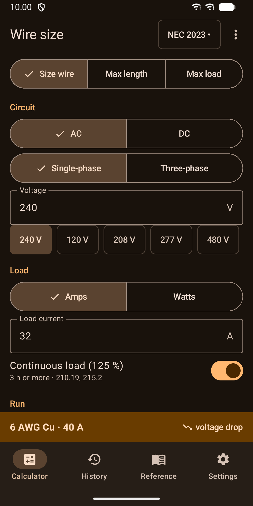
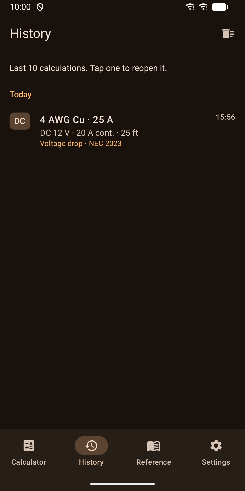
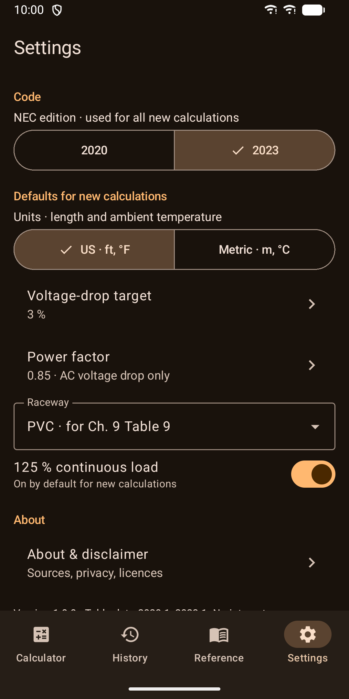

Calculadora de cable: NEC
Calcula la sección del cable por ampacidad, caída de tensión y protección







Acerca de la app
Calculadora de cable elige la sección del conductor de un circuito según las reglas de la NEC: ampacidad, caída de tensión y protección. Cada resultado indica qué regla fija la sección y de qué tabla y edición de la NEC procede. CALCULA LA SECCIÓN O TRABAJA AL REVÉS - Sección: introduce la carga, la longitud del tendido y las condiciones. Obtienes la sección del cable y el interruptor automático. - Longitud máxima: elige un cable y mira hasta dónde puedes llegar dentro de tu objetivo de caída de tensión. - Carga máxima: elige un cable y una longitud y mira la mayor carga que admite. BASADA EN LA NEC - NEC 2020 y NEC 2023. La 2023 es la predeterminada y la app recuerda tu elección. - Ampacidad según la Tabla 310.16 (tubo o cable) y la Tabla 310.17 (aire libre). - Reducción por temperatura ambiente y número de conductores con corriente. - Carga continua al 125 por ciento, límites de conductores pequeños según 240.4(D) y temperatura de terminales según 110.14(C). - Siguiente tamaño estándar de interruptor según 240.6(A). Puedes escribir tu propio tamaño o comprobar un interruptor existente con el cable. - Caída de tensión según el Capítulo 9, Tabla 9 en CA, con factor de potencia y tubo de PVC, aluminio o acero, y según la Tabla 8 en CC. PARA ELECTRICISTAS, AFICIONADOS Y PROYECTOS DE 12 V / 24 V - CA monofásica o trifásica, o CC con valores de 12 V y 24 V. - Carga en amperios, o en vatios y voltios. - Cobre o aluminio, de 14 AWG a 1000 kcmil. 18 y 16 AWG se ofrecen para CC. - THHN, XHHW-2, NM-B y otros aislamientos habituales, con selección manual de la columna de temperatura. - Pies o metros, Fahrenheit o Celsius. RESPUESTAS CLARAS - Cada resultado indica qué fijó la sección: ampacidad, caída de tensión, interruptor o terminales. - Cada resultado cita la tabla y la edición de la NEC usadas. - Comparte un resultado como texto. - El historial guarda tus últimos 10 cálculos. Toca uno para abrirlo de nuevo. - Un widget de la pantalla de inicio muestra tus últimos 3 resultados. - Tabla de referencia AWG a mm2 con resistencia, calculada con fórmulas públicas. PRIVADA POR DISEÑO - Funciona sin cobertura. La app no tiene permiso de internet y no pide ningún permiso. - Sin cuenta, sin analíticas, sin seguimiento. - Tus ajustes y los últimos 10 resultados se quedan en tu dispositivo. ACCESIBLE - El tema claro u oscuro sigue el ajuste del sistema. - Etiquetas para lectores de pantalla en controles y resultados. - Zonas táctiles grandes y diseños para móvil y tableta. NO INCLUYE Tendidos en paralelo, la regla del 83 por ciento para viviendas de 310.12, ocupación de tubos y cajas, cargas de motor (CV) y tablas ABYC o marinas. Los resultados son estimaciones. Verifícalos siempre con la normativa local y la autoridad competente (AHJ). NEC y NFPA 70 son marcas de NFPA. Esta app no está afiliada a NFPA.